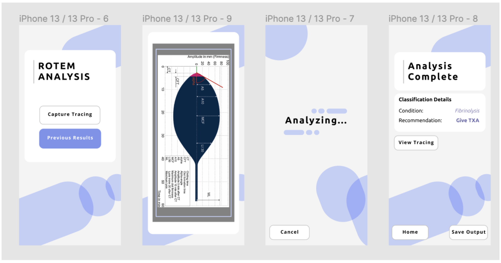

ROTEM Interpretation Mobile Application
Problem
Resusitation strategy such as treatment for hemorrahic shock is using whole blood (Red Blood Cells, Fresh Frozen Plasma, Platlet), casuing the waste of the blood product
This shows the need of viscoelatic testing such as Rotation thromboelastometry (ROTEM) to know personalized supply of the blood products.
Yet, there is a problem regarding interpretaion of the tracing results of ROTEM, needing more time and human resources with possible chance of frequent misinterpretation.
ROTEM raw results (Image Source)
Solution
Thus, our solution is to build a mobile application that uses machine vision to scan the ROTEM tracing to interpret the results using machine learning algorithm.
This solution will improve ROTEM interpretations
- Minimize subjectivity
- Less need for specialized personnel
- Targeted and more accurate response
- Reduce waste
Technical Background
Main languages used:
TensorFlowJS
React Native (JSX)
ML algorithm explained (To be updated)
Raw prototype (Updated on 2021/02)
UI Design(Updated on 2021/02)